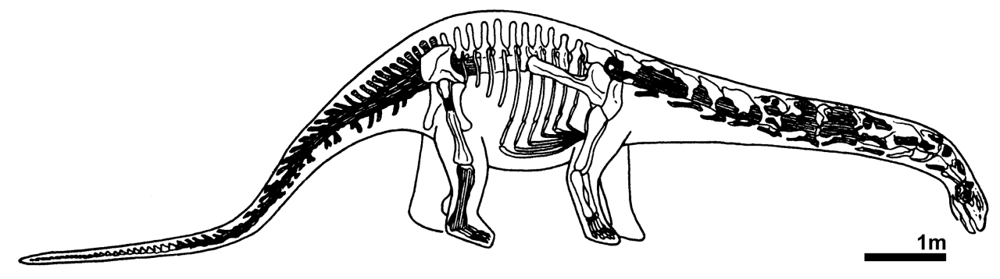

石头能有什么问题？
石头有声带吗？
马门溪龙（Mamenchisaurus constructus）最早于1952年在中国四川省伊塘公路的工地上被发现。化石遗址属于上沙溪庙组，至少可以追溯到晚侏罗世。 1954年，中国著名古生物学家杨钟健对这部分骨骼化石进行了研究，将其命名为马门溪龙。
正型标本（IVPP V 790）残缺不全且杂乱。材料包括：5个背椎、30个尾椎、肋骨碎片、背神经棘和脉弧。有14块颈椎，但没有一块是完整的，杨指出一些颈椎可能已经丢失，并估计整个颈部为4.67米。还有部分四肢骨骼，包括：两块股骨、完整的胫骨、腓骨、距骨、跖骨、指骨和爪子。头骨、前肢和腰带都没保存。据估计，建设马门溪龙的长度约为13至15米，质量为5吨。
